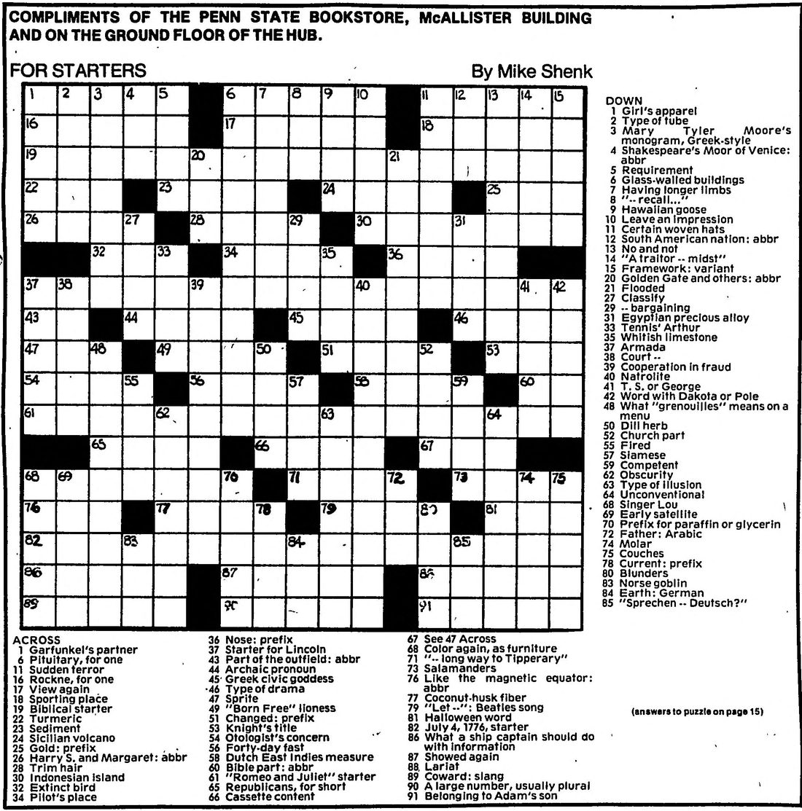
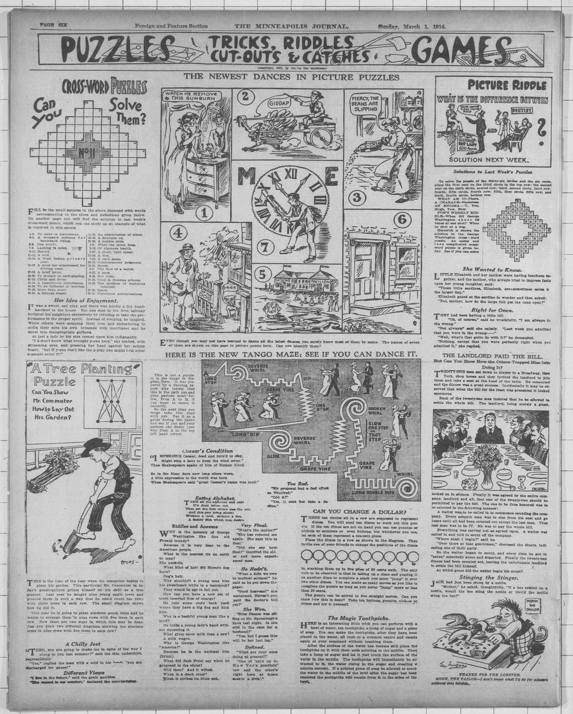
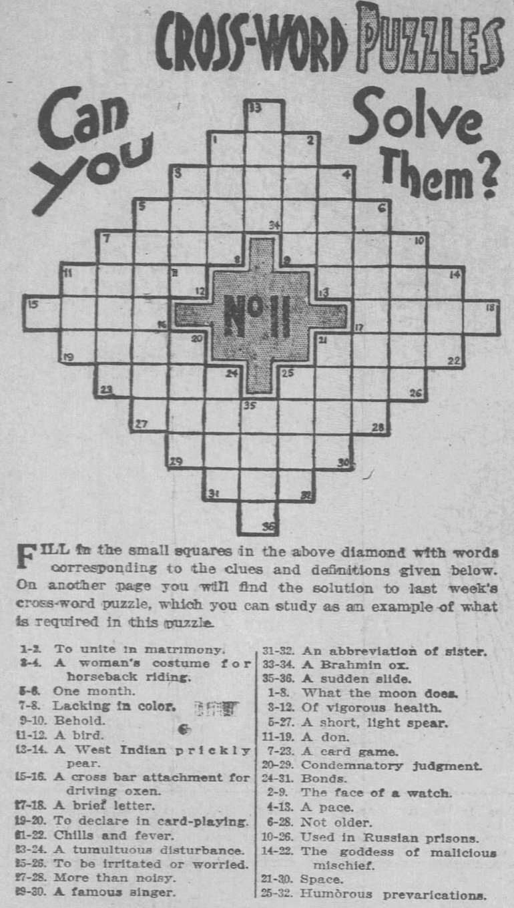
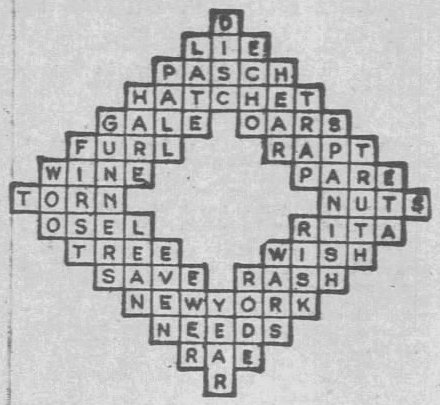
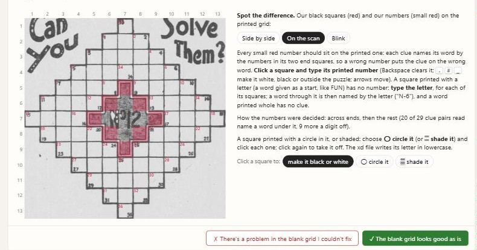

The week of 9 November: Shenk's first puzzles and the World's diamonds
Sixty-nine of Mike Shenk's student crosswords and two New York World puzzles from 1914 reached their finished form this week. Getting the World's through meant letting reviewers fix a puzzle's shape, numbers and answer key themselves.
What was saved
A puzzle is saved when it is in its publication's repository as a finished
xd file: every clue, every answer, the grid, and a record of
where each came from. This week that happened for the first 69 of Mike Shenk's crosswords from the Penn State
Daily Collegian, 1976 to 1981, which no crossword collection had before. The earliest is from
13 September 1976, titled "For Starters", and its four long answers are famous first lines:
IN THE BEGINNING GOD, FOURSCORE AND SEVEN, TWO HOUSEHOLDS BOTH and WHEN IN THE COURSE OF. They are in the
collegian repository's xd folder.

The same week, the first two 1914 puzzles of the New York World's FUN series went the same way: No. 11 of
1 March and No. 12 of 8 March, read from the reprints in the Minneapolis Journal. They follow the
World's two puzzles of December 1913, which the xd corpus
already holds. They are in the
newyorkworld repository's xd folder.
And on 10 November, the first 35 puzzles from GAMES magazine, 1977 to 1979, went into the
games repository.

Why the World was hard
The early World puzzles are diamonds, with a shaded cross through the middle, and their clues do not say "across" or "down". Each word is named by the numbers in the squares at its two ends: "1-2. To unite in matrimony." is the three-letter word that runs from square 1 to square 2. Nothing in the clue says which way the word runs; that comes from the grid.

The answers came a week later, on the same page as the next puzzle. Here is the solution printed beside No. 11, to the week before's George Washington puzzle, No. 10:

So when a number in a hundred-year-old newspaper scan is smudged, or a square's shape is misread, the clue lands on the wrong word, and everything after it can follow. Retyping the puzzle would hide the mistake. Instead, a reviewer can now correct the grid's shape, a printed number or a letter of the answer key on the proof page, where each sits beside the scan, and the puzzle is rebuilt from those corrections, each one recorded with who made it.

What reviewers can do now
- See the exact file that will be published, with its notes, as they work.
- Keep or discard each printed line that is not a clue (a heading, a puzzle note), and watch the notes change.
- Mark something "printed this way, but wrong". The misprint stays in the record of what was printed, and the correction is made with a note saying what the page said.
- Type in a clue the scan cut off. It is marked as typed by hand, never passed off as read from the page.
- Keep a note's paragraph breaks.
Every reviewer's corrections count, not only ours: everything is recorded and can be undone. A bug that sent the review site's links for 433 puzzles to the wrong puzzle was also fixed this week.
What's next
More of the 1914 World, in date order. GAMES from 1980 to 1982. And two layers for every puzzle we publish: a transcription, exactly as printed, and an edition, with each misprint corrected and a note saying what was printed. The edition is the one meant to be solved and searched; the transcription is its proof.
How to help
Many of these puzzles are waiting on a question a person can answer by looking at the printed page: is this letter an E or an F, is this the clue the page meant? There are 155 such questions on the Collegian and 22 on GAMES. Each takes a few minutes, and no account is needed. Start on the review site's batch page: press "Start with the questions" on a publication and the proof page opens where the question points.